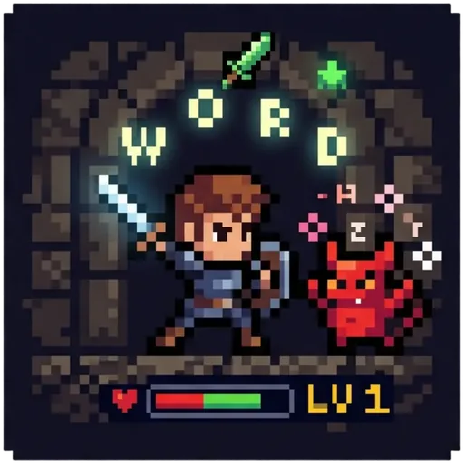
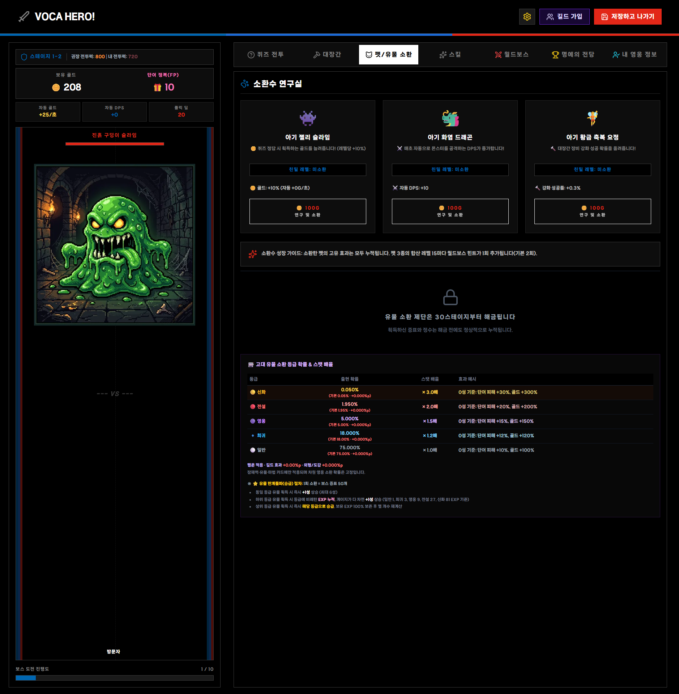
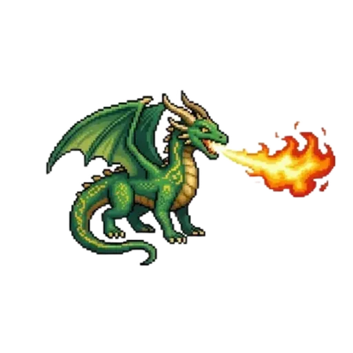
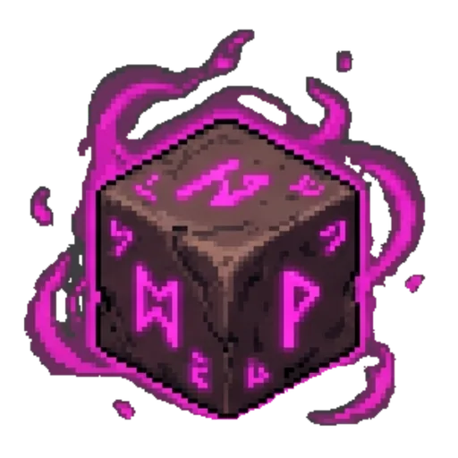
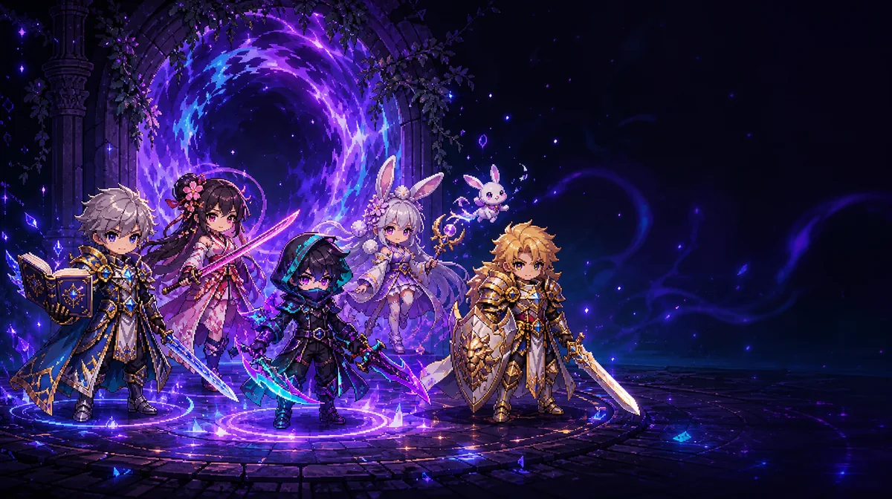
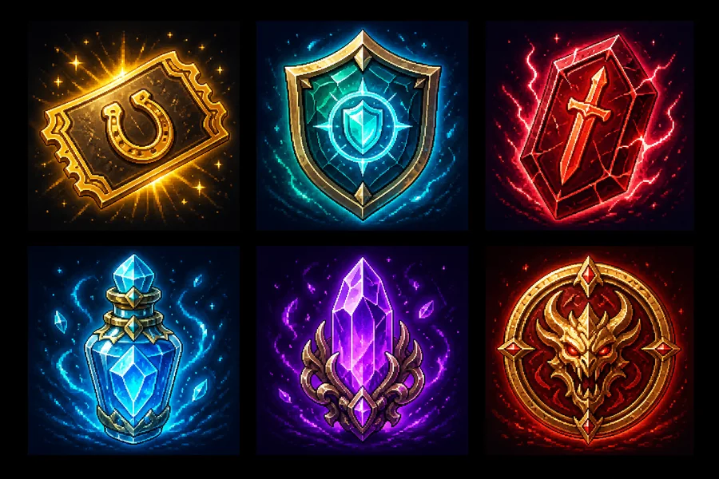
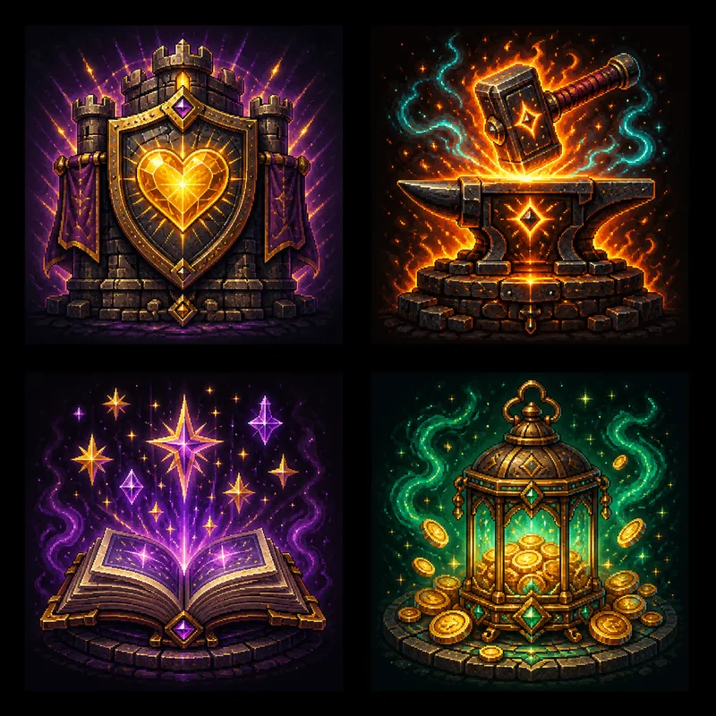

골드로 장비를 강화하고 잠재력 옵션을 연구합니다.

Voca Hero!영단어 용사 키우기
STUDENT QUICK GUIDE
학생
퀵 가이드
용사를 만들고 Google 계정을 연결한 뒤, 영단어 퀴즈로 성장하고 친구들과 협동하는 방법

퀴즈영단어 반복 학습
성장장비·펫·스킬
수집유물·카드·외형
협동길드·월드보스

용사를 만들고 Google 계정을 연결한 뒤, 영단어 퀴즈로 성장하고 친구들과 협동하는 방법

상단의 길드 가입을 열고 선생님이 준 영문·숫자 6자리 코드, QR 또는 참여 링크를 이용합니다. 길드에서 나가도 개인 학습·게임 기록은 유지됩니다.
선생님이 배정한 단어팩과 문제 유형이 퀴즈 전투에 반영됩니다.
퀴즈 풀기 → 정답 보상 → 영웅 성장 → 다음 스테이지
정답은 골드·FP·전투 성장과 길드 기여에 연결됩니다. 틀린 단어는 기록되어 다시 학습합니다.
철자 순서는 소문자로 보이며, 단답식은 띄어쓰기 차이를 무시합니다.
정답 10회 이상·누적 정답률 80% 이상이면 숙련 단어로 표시됩니다.
길드에서 자주 틀린 단어를 선생님이 재학습 문제로 보낼 수 있습니다. 전체 문제를 최대 3회 도전합니다.
| 탭 | 무엇을 하나요? | 학습과의 연결 |
|---|---|---|
| 퀴즈 전투 | 영단어 문제를 풀고 몬스터와 스테이지를 진행합니다. | 모든 성장의 중심 |
| 대장간 | 장비 강화, 잠재력과 전투력을 관리합니다. | 정답 보상으로 성장 |
| 펫/유물 소환 | 펫과 유물을 소환·수집·장착합니다. | 학습 지속 보상 |
| 스킬 | 퀴즈 FP 캡슐로 얻고 성장시켜 최대 4장을 장착합니다. | 학습 보상이 전투 기술로 연결 |
| 월드보스 | 180초 동안 전 학년 공유 보스를 공략합니다. | 빠른 퀴즈와 협동 |
| 명예의 전당 | 랭킹과 학습·성장 칭호를 확인합니다. | 꾸준함과 성취 기록 |
| 내 영웅 정보 | 전투력, 문제 유형별 성취, 숙련 기록을 봅니다. | 나의 강점·약점 점검 |
골드로 장비를 강화하고 잠재력 옵션을 연구합니다.

펫·유물소환한 효과를 누적하며 전투·학습 보너스를 얻습니다.

마법 스킬퀴즈 FP로 캡슐을 열어 얻고 성장시켜 최대 4장을 장착합니다.

차원 영웅(외형)50종 외형과 5개 등급을 수집하고 도감 효과를 쌓습니다.

길드 상점길드 코인으로 외형·보호 아이템·핵심 재화를 이용합니다.

길드 효과길드 포인트를 투자해 모든 길드원이 공유하는 효과를 성장시킵니다.
| 탭 | 주요 내용 | 사용 시점 |
|---|---|---|
| 길드 본부 | 길드 현황, 학습 참여, 시련, 배정 학습 확인 | 길드에 들어온 뒤 가장 먼저 |
| 길드원 | 길드원 목록과 활동 확인 | 친구·동료의 참여 확인 |
| 길드 랭킹 | 길드의 학습·기여 순위 확인 | 공동 목표와 성취 확인 |
| 길드 상점 | 차원 영웅 소환, 전투·강화 아이템, 재화 교환 | 길드 코인을 사용할 때 |
| 차원 영웅(외형) | 보유 외형 장착·해제, 도감·파편 해금 | 외형과 능력 효과 관리 |
| 길드 효과 | 길드 포인트로 공용 효과 4종 투자 | 모든 길드원의 장기 성장 |